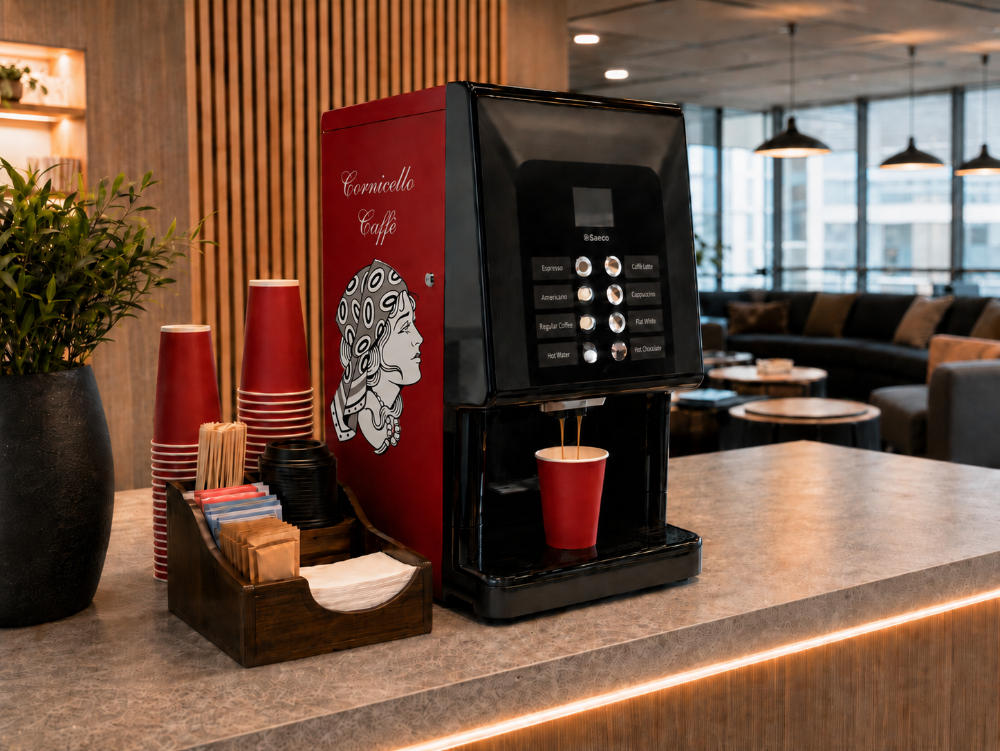

Selected for rich espresso, smooth milk drinks, and everyday consistency.

Premium coffee programs, self-service caffès, and mobile espresso service for workplaces, public spaces, and private events.
Barista-Quality.
Anywhere. Everywhere.
Machines, maintenance, menus, and service details handled with care.
Office lounges, public kiosks, espresso carts, and trailer experiences.
Our name, Cornicello, pronounced kor-nee-chello, comes from the traditional Italian twisted horn-shaped chili pepper: a symbol of good luck, prosperity, and protection against negativity.
Much like the cornicello wards off bad energy, we see every cup we serve as a way to bring people together, lift spirits, and create something positive in the day.
Cornicello Caffè was created with the simple goal of bringing the artistry of Italian coffee culture to every corner of our community with exceptional quality, effortless service, and moments worth savouring.
Services
Caffè service shaped around the room.
From daily office coffee to high-traffic self-service stations and full event service, Cornicello Caffè makes premium coffee feel effortless, memorable, and beautifully hosted.
View service package01
Workplaces
Machine subscriptions
Offices, lounges, waiting rooms, and boutique hotels.
A full-service espresso program stocked with premium beans and cared for by Cornicello, all for a simple monthly fee.
- Machine, beans, installation, and maintenance included.
- Pricing based on employee count or estimated visitors.
- Espresso, cappuccino, latte, regular coffee, and daily classics.
02
Public spaces
Self-service caffès
Public venues, campuses, recreation centres, and high-traffic lobbies.
Compact tap-to-pay stations that bring quick, barista-quality drinks to busy spaces without adding operational effort.
- No upfront cost; customers simply tap to pay per drink.
- Premium drinks in seconds without sacrificing valuable space.
- Potential monthly revenue tied to usage milestones.
03
Events
Trailer and cart experience
Weddings, film sets, corporate events, and private celebrations.
A warm, mobile caffè presence with customizable menus, skilled service, and a setup tailored to your guest list.
- Custom menus for coffee creations and refreshing Italian sodas.
- Fixed pricing based on guest or crew count.
- Flexible service hours to suit the rhythm of the event.
How it works
A polished caffè program, without the heavy lift.
Tell us the setting
Share the space, guest count, schedule, and the kind of coffee moment you want to create.
We shape the setup
We recommend the right machine, kiosk, cart, menu, service flow, and support plan.
Cornicello arrives
From installation to event service, we handle the details so every cup feels seamless.
Contact us
Bring Cornicello Caffè to you.
Tell us about your space, traffic, or guest list. We will shape the caffè around it.
Contact us